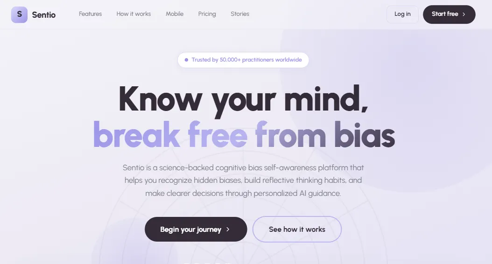
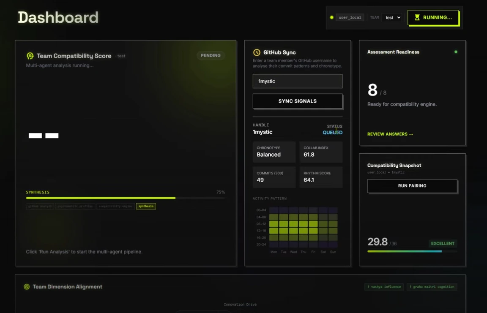
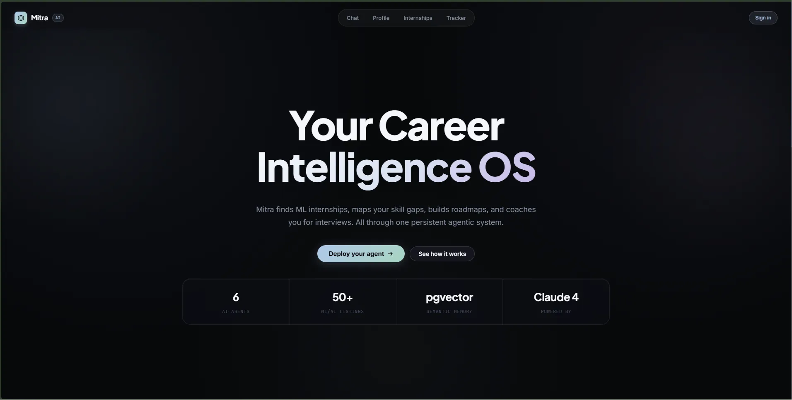
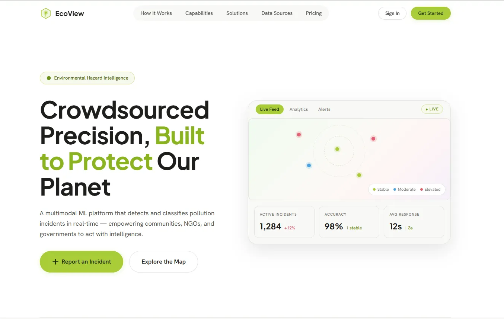
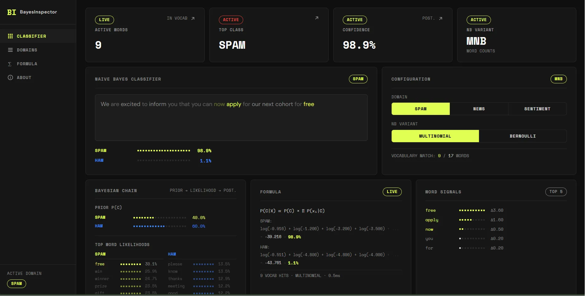
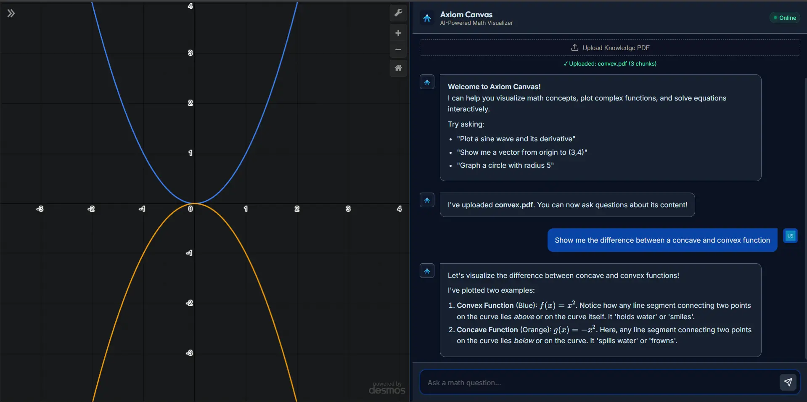
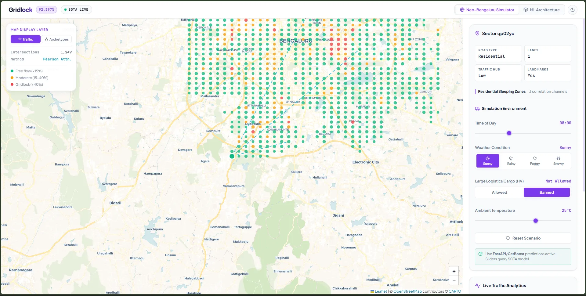
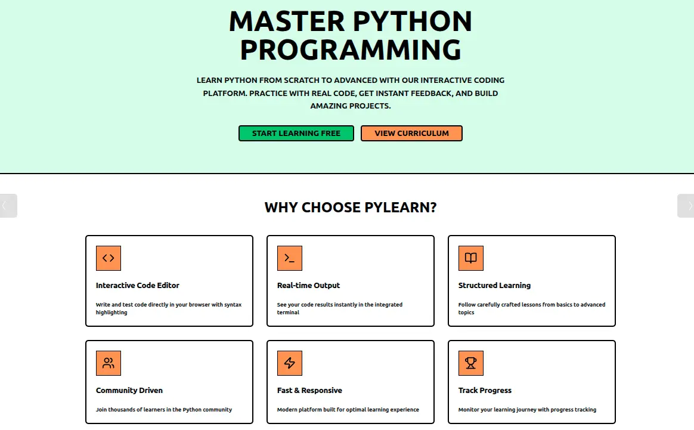
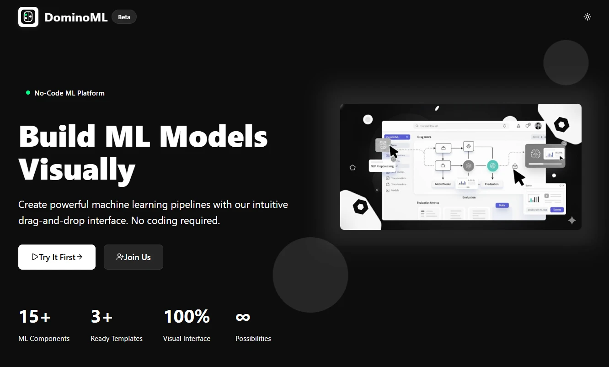
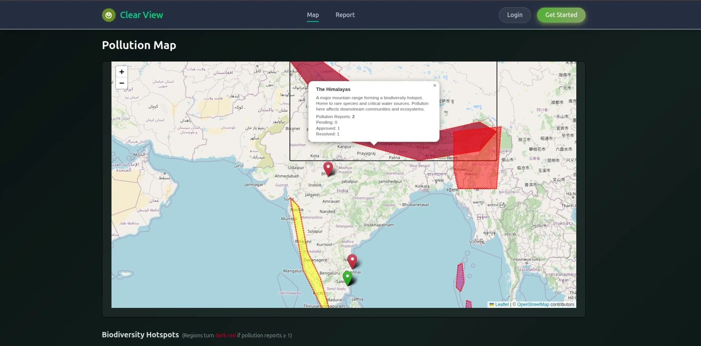

Atharv
Khare.
BS Data Science student at IIT Madras, building at the seam of ML and the web. I learn from first principles and ship things end-to-end — from model experiments to deployed systems. Currently exploring RAG, GenAI tooling, and well-configured Linux.
by the numbers
selected projects
Sentio
↗
AI-driven cognitive wellness platform leveraging NLP and Deep Learning for real-time journaling bias analysis. Engineered RAG assistant and custom scrapers.
GitSyntropy
↗
Multi-agent system that scores team compatibility and simulates hiring impact using GitHub behavioral data and psychometric profiling.
Mitra
↗
Multi-agent career platform that personalizes internship discovery, resume analysis, interview prep, and skill roadmaps using LangGraph, semantic memory, and adaptive profiling.
EcoView
↗
Serverless civic tech platform for pollution reporting with AI classification, community verification, NGO campaigns, and real-time mapping running at $0/month.
BayesInspector
↗
Client-side probabilistic text classifier exposing the full Naive Bayes reasoning chain word-by-word as you type. Runs entirely in the browser with pre-baked JSON weights.
Axiom Canvas
↗
Math visualization engine powered by the Desmos API and OpenRouter AI with RAG. Users explore mathematical concepts interactively.
Flipkart Gridlock
↗
Spatio-temporal traffic demand forecasting system achieving a top score of 92.397% with an interactive cyberpunk React dashboard and hybrid fallback simulation engine.
Episteme
↗
Socratic Study Engine AI that refuses to answer your questions, and instead helps you answer them yourself via Bayesian Knowledge Tracing.
DominoML
↗
Visual drag-and-drop ML pipeline builder. Compose preprocessing, models, and evaluators on a canvas; export training scripts.
Clearview Eco
↗
Civic tech platform for pollution reporting and verification. Crowdsourced photos verified by TensorFlow CNN model, geotagged on React map.
latest work
recent ships live
Best Capstone Project Award
IIT Madras BS · Business Data Management
GitSyntropy — hiring simulator
LangGraph agents · FastAPI · agent orchestration
Episteme — socratic study engine
Next.js 15 · Claude Sonnet 4 · Supabase
Anthropic Claude Builder Club
2nd Runner Up · Spring 2026 · $300 prize
featured recognition
BDM Best Capstone Project Award
Received the prestigious Business Data Management (BDM) Best Capstone Project Award at IIT Madras BS program for outstanding data engineering and predictive modeling implementations.
currently
building
RAG-first study tools and agentic systems
learning
Distributed systems · NPTEL · model deployment
tinkering
Hyprland rices · neovim configs · origami
education & certs
written work
origami showcase